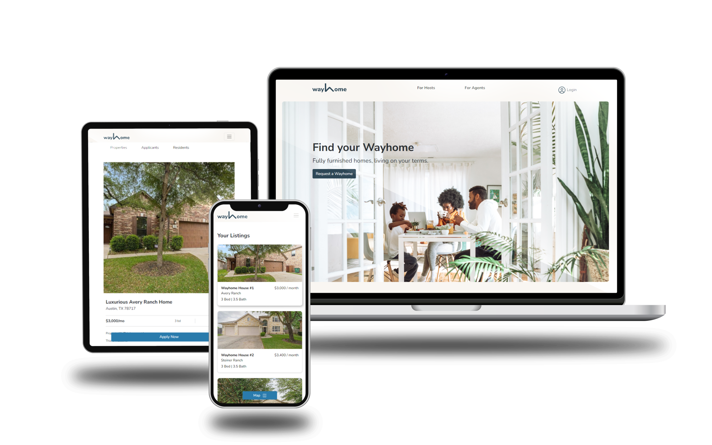

Technologies I have been experiencing here:
- Ruby on Rails
- Docker
- Github Actions
- Bootstrap
- JavaScript
- HTML
- SCSS
- Rspec
- Cypress
- Redis
- RESTful APIs
- MinIO
- RubyGem
- Kanban
- Git
- Bash
Software Engineering Intern @
Wayhome Services Co.
August - December 2023
Overhauled rental listing and applications process incorporating new mobile responsive designs, rental screenings via 3rd party API, geolocation search, managed state machines of objects, and fixed over 150 bugs.
Migrated from local to S3 storage to facilitate scalability.
Implemented a GitHub Actions-based CI/CD system with diverse workflows for efficient build and deploy processes.
Upgraded application from Rails 6 to 7.
Seamlessly integrated Rspec and Cypress testing to ensure critical features do not break, improving operational efficiency by over 50%.
Collaborated with a cross-functional team to address technical issues and responsible for the implementation of significant UX overhauls across the entire application, resulting in a 30% increase in user satisfaction.